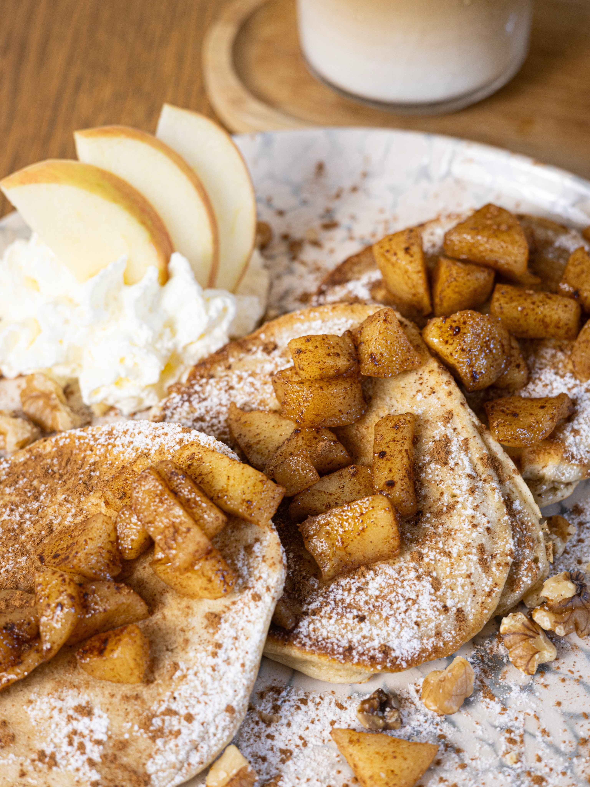
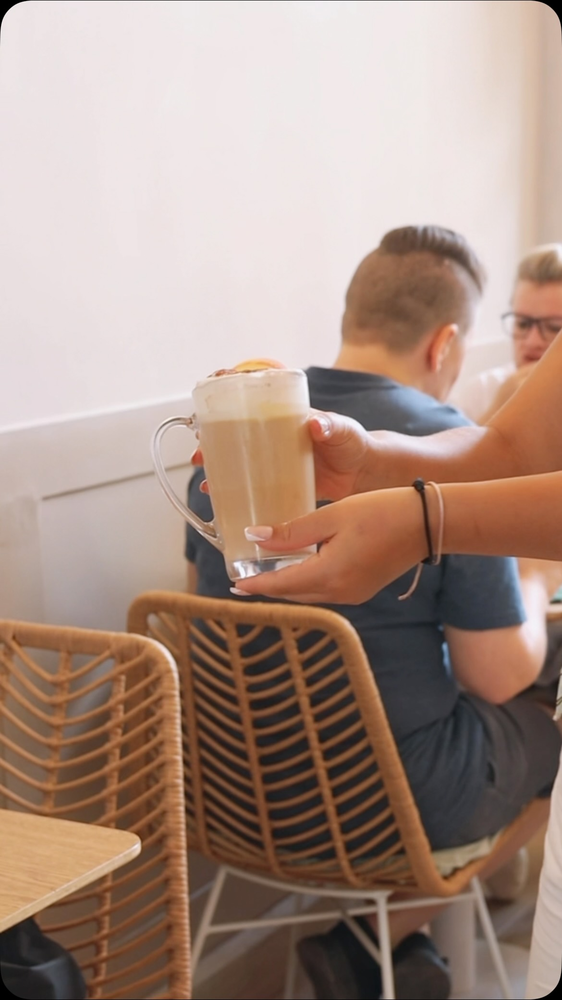

Benijófar · Brunch & Coffee
Tu momento
Luma.
Un café, algo rico y tiempo para disfrutar. Te esperamos en Luma.

DESAYUNOS ✳ BRUNCH ✳ CAFÉ ✳ SMOOTHIES
Bienvenido a Luma
Siéntate. Respira.
Disfruta de la pausa.
En Luma, una tostada y un café pueden ser el comienzo de la mañana. Si vienes con ganas de quedarte un rato más, hay sitio para compartir un brunch o pedir algo dulce. Nos encuentras en Benijófar.
Un poquito de Luma
¿Dulce, salado o un café?


Nos vemos en Benijófar
Tu próxima pausa
empieza aquí.
C. Aneto, Local 13
03178 Benijófar, Alicante
Consulta el horario actual en Instagram.